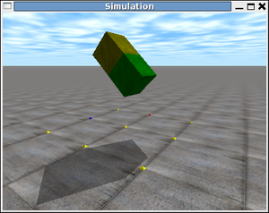
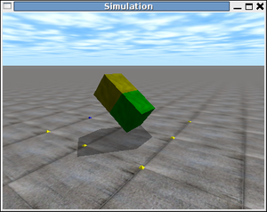
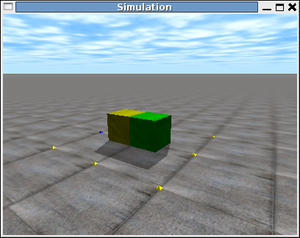
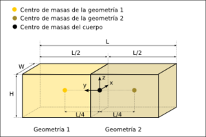

Contenido
[ocultar]Modelado de cuerpos compuestos (I)
| |
|
|
Introducción
En este ejemplo se muestra cómo construir un cuerpo compuesto por dos geometrías. Se parte del capítulo anterior en el que se ha simulado la caida libre de un cubo y se ha representado en 3D, y se sustituye este cubo por un objeto compuesto por dos geometrías.
La librería drawstuff nos permite dibujar geometrías básicas: cilindros, hexaedros, esferas, etc. A partir de ellas se pueden construir cuerpos más complejos. Esto permite hacer simulaciones donde los cuerpos se parezcan más a los objetos reales.
Objetivo
- Crear cuerpos compuestos sencillos
Código
| Programa principal | |
| Creación y dibujo del cuerpo compuesto | |
| Definición de las constantes. | |
| Definición de los prototipos de body.cpp y las estructuras de datos. |
Compilación
Todos los ejemplos de este tutorial compilan tecleando "make". Sin embargo se describe a continuación cómo se compila directamente usando el GCC:
g++ -Iinclude -c -o compound1_ex/compound1.o compound1_ex/compound1.cpp g++ -Iinclude -c -o compound1_ex/body.o compound1_ex/body.cpp g++ -o compound1 compound1_ex/compound1.o compound1_ex/body.o libdrawstuff.a -lm -lode -lX11 -lm -lGL -lGLU
Ejecución
Para probar el ejemplo, teclear:
./compound1
Además de los mensajes impresos en pantalla por la drawstuff, aparecerá el siguiente menú:
Keys: 1: Drop the compound body q: Quit
La tecla '1' sitúa el cuerpo en su posición inicial, por lo que vuelve a caer. La tecla 'q' finaliza la simulación.
Capturas de pantalla
Visualización de la caida del cuerpo, en tres instantes diferentes:
| 
Pinchar para ampliar |

Pinchar para ampliar |


Vídeo

Modelo de cuerpo


El cuerpo se muestra en la figura 1. Está formado por dos geometrías iguales, de tipo hexaédrico. Las dimensiones del cuerpo son L x W x H y las de las geometrías: L/2 x W x H. La masa total es M.
Los centros de masas de las geometrías están a una distancia de L/4 del centro de masas del cuerpo.
La estructura de datos para el cuerpo consta del identificador del cuerpo y de las dos geometrías:
struct MyBody {
dBodyID body;
dGeomID geom[2];
};
La geometría geom[0] es la de la izquierda y geom[1] la de la derecha.
Explicación del código
El programa principal, en el fichero compound1.cpp es similar al del ejemplo del capítulo anterior. La diferencia está las funciones Body_new() y Body_Render() del archivo body.cpp: el cuerpo se construye y se dibuja de manera diferente.
Función Body_new()
Una vez creado el cuerpo, se crean las dos geometrías especificando su tamaño: W x L/2 x H:
body->geom[0] = dCreateBox (space, W, L/2, H); body->geom[1] = dCreateBox (space, W, L/2, H);
A continuación hay que asociarlas al cuerpo:
dGeomSetBody (body->geom[0],body->body); dGeomSetBody (body->geom[1],body->body);
En este momento el cuerpo consta de dos geometrías que tienen sus centros de masas situados sobre el del cuerpo. Ahora hay que indicar las posiciones relativas de sus centros de masas con respecto al del cuerpo. Como se ve en la figura 1, el de la geometría izquierda está situado en y=L/4 y el de la derecha en y=-L/4.
dGeomSetOffsetPosition(body->geom[0], 0.0, L/4,0.0); dGeomSetOffsetPosition(body->geom[1], 0.0, -L/4, 0.0);
| ¡Muy importante! La llamada a la función dGeomSetOffsetPosition() sólo se puede realizar una vez que la geometría se ha asociado a un cuerpo |
Función Body_render()
La función de dibujado es muy sencilla. Primero se establece la textura:
dsSetTexture (DS_WOOD);
Luego se dibuja la geometría izquierda, de color amarillo:
dsSetColor (1,1,0); drawGeom(body->geom[0]);
Y por último la geometría derecha, de color verde:
dsSetColor (0,1,0); drawGeom(body->geom[1]);
Enlaces
| |
|
|